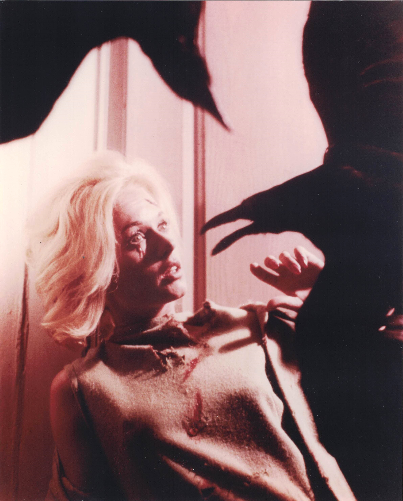

Product No. HEC-0073
$12.99
Shipping: $8.95
Description
8x10 color photograph from The Birds
Full Description
Tippi Hedren is an American actress, former fashion model, and animal-rights advocate best known for her starring roles in Alfred Hitchcock’s films "The Birds" and "Marnie." Born Nathalie Kay Hedren on January 19, 1930, in New Ulm, Minnesota, she began her career as a successful model before being discovered for motion pictures. Hedren became internationally famous as Melanie Daniels in Hitchcock’s "The Birds" (1963). The suspense classic follows a series of unexplained and increasingly violent bird attacks on residents of a small California coastal town. Her performance made her one of the most recognizable actresses of the early 1960s. She worked with Hitchcock again in "Marnie" (1964), starring opposite Sean Connery. Hedren played the troubled title character, a woman with a mysterious past and compulsive behavior. The role gave her the opportunity to take on a darker and more psychologically complex performance. Her later film work included "A Countess from Hong Kong," "Roar," "Pacific Heights," and numerous television appearances. Hedren also became widely known for her commitment to animal welfare, especially the protection of big cats. She founded the Shambala Preserve in California to provide sanctuary for exotic animals. Tippi Hedren is also the mother of actress Melanie Griffith and grandmother of actress Dakota Johnson. Her association with "The Birds," "Marnie," Alfred Hitchcock, and classic Hollywood continues to make her autographs, photographs, and movie memorabilia popular with collectors.
Condition
Excellent condition